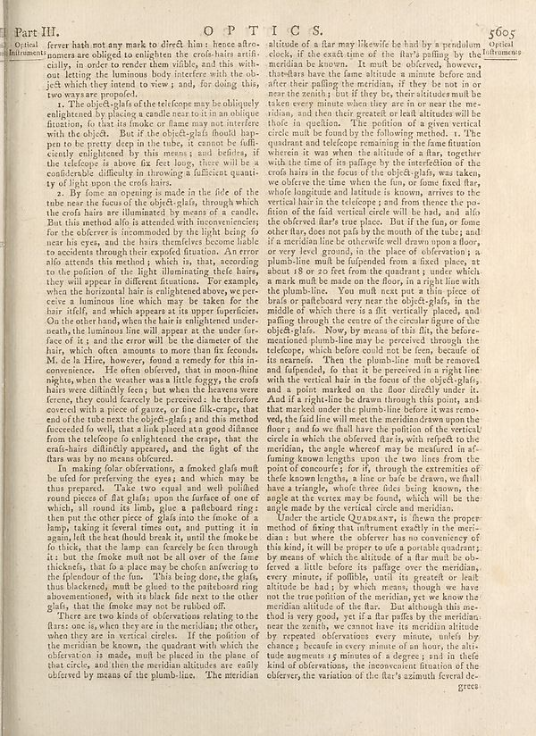

Scan ID britannica:309f765b1ecc83e0a7f7762e44b4a927a7555443:train:1945
Image SHA-256 d877e2c0e7d6979331208cad696389c92af546a9707a21816f1962452815285f
Status: ok. Running header: Part III. U P T I C S. 5605 (catchword). Removed page furniture: Page-header: Part III. U P T I C S. 5605, Page-footer: greca.
PDF · raw Parse reply · LaTeX
Entries: E0171

| # | Class | Box | Parse 3.5 | Used text | Source |
|---|---|---|---|---|---|
| 1 | Text | [0.0098, 0.0523, 0.4834, 0.1359] | Ortial ferer has not any mark to direct him: hence after- momers are obliged to enlighten the crois-hairs artifi, in order to render them vifible, and this with- out letting the luminous body interfere with the ob- jefe which they intend to view , and, for doing this, two ways are propofel. | server hath not any mark to direct him: hence astro- nomers are obliged to enlighten the cross-hairs artifi- cially, in order to render them visible, and this with- out letting the luminous body interfere with the ob- ject which they intend to view; and, for doing this, two ways are proposed. | super_vl |
| 2 | List-item | [0.0742, 0.1352, 0.4844, 0.2547] | 1. The object glafs of the telcfore may be obliquely enlightened by placing a could near usit in our oblique frition, to that its smoke or flame may not interfere with the object. But if the object-glafs should happen to be pretty deep in the tube, it cannot be difficultly enlightened by this means i said bedties, if the telefcope is above fix feet loop, there will be a considerable difficulty in throwing a sufficient quantity of high upon the crois hairs. | 1. The object-glass of the telescope may be obliquely enlightened by placing a candle near to it in an oblique situation, so that its smoke or flame may not interfere with the object. But if the object-glass should happen to be pretty deep in the tube, it cannot be sufficiently enlightened by this means; and besides, if the telescope is above six feet long, there will be a considerable difficulty in throwing a sufficient quantity of light upon the cross hairs. | super_vl |
| 3 | List-item | [0.0752, 0.2555, 0.4854, 0.6305] | 2. By fome an opening is made in the tide of the tube near the focus of the object-glafs, though which the crois hairs are illuminated by means of a candle. But this method alfo is attended with inconveniences for the oblorer is incommeded by the light being the near his eyes, and the hair harmless become liable to accidents through their expelled frustration. An error also attends this method i, which is, that, according to the position of the light illuminating these hairs, they will appear in different situations. For example, when the horizontal hair is enlightened always be perceive a lum | 2. By some an opening is made in the side of the tube near the focus of the object-glass, through which the cross hairs are illuminated by means of a candle. But this method also is attended with inconveniences; for the observer is incommoded by the light being so near his eyes, and the hairs themselves become liable to accidents through their exposed situation. An error also attends this method; which is, that, according to the position of the light illuminating the hairs, they will appear in different situations. For example, when the horizontal hair is enlightened above, we perceive a lumin | super_vl |
| 4 | Text | [0.0762, 0.632, 0.4824, 0.8297] | In making the oblorations, a model glafs mulb uefd for preserving the eyes i and which may be thus prepared. Take two equal and well political round prices of glafs into the farles of one of which, all round its limb, glue a palkboard ring: then put the other piece of glafs into the smoke of a lamp, taking it several times time, and putting it in again, left the heat thould break it, until the smoke be fo thick, that the lamp can favorably be free through it, but the smoke mult not be all over of the same thickets, that fito a place may be obtain anfering to the splendour of the fun. This bein | In making solar observations, a smoked glass must be used for preserving the eyes; and which may be thus prepared. Take two equal and well polished round pieces of flat glass; upon the surface of one of which, all round its limb, glue a pasteboard ring: then put the other piece of glass into the smoke of a lamp, taking it several times out, and putting it in again, left the heat should break it, until the smoke be so thick, that the lamp can scarcely be seen through it: but the smoke must not be all over of the same thickness, that so a place may be chosen answering to the splendour of the sun | super_vl |
| 5 | Text | [0.0771, 0.8305, 0.4863, 0.9258] | There are two kinds of observation relating to the flares, one is, when they are in the meridian; the other, when they are in vertical circles. If the polition of the meridian ke known, the quadrant wohl which the oblorates is much, mult he placed in the plane of that circle, and then the meridian altitudes are really obferred by means of the plumb-line. The meridian | There are two kinds of observations relating to the flares: one is, when they are in the meridian; the other, when they are in vertical circles. If the position of the meridian be known, the quadrant with which the observation is made, must be placed in the plane of that circle, and then the meridian altitudes are easily observed by means of the plumb-line. The meridian | super_vl |
| 6 | Text | [0.5029, 0.0531, 0.9043, 0.6977] | altitude of a flat may likewise be had by a pendulum clock, if the exact time of the flat’s pulling by the meridian be known. It mult be obffered, however, therehas lines the fans of latitude a minute before and after their puffling the meridians, if they be not in on near the zenith i, but if they be, their altitudes mult be takes every minute when they are in or near the meridian, and then their greatest or their altitudes will be those in question. The polition of a given vertical circle mult he found by the following method. 1. The quadratus and telescope remaining in the frame situation w | altitude of a star may likewise be had by a pendulum clock, if the exact time of the star's passing by the meridian be known. It must be observed, however, that stars have the same altitude a minute before and after their passing the meridian, if they be not in or near the zenith; but if they be, their altitudes must be taken every minute when they are in or near the meridian, and then their greatest or least altitudes will be those in question. The position of a given vertical circle must be found by the following method. 1. The quadrant and telescope remaining in the same situation wherein i | super_vl |
| 7 | Text | [0.4961, 0.6984, 0.9033, 0.925] | Under the parallel Qaz waves, is flew the proper method of fixing that obfluent exactly in the meridian, but where the oblorer has no convivency of this kind, it will be proper to use a guarda quadrant; by means of which the altitude of a flare mulb be ob-hered a little before its puffage over the meridian, every minute, if polibbs, until its greatest or lealt altitude be bad, by which means, though we have not the true polition of the meridian, yet we know the meridian altitude of the flar. But although this method is very good, yet if a flatter splits by the meridian near the zenith, we cann | Under the article Quadrant, is shewn the proper method of fixing that instrument exactly in the meridian: but where the observer has no convenience of this kind, it will be proper to use a portable quadrant; by means of which the altitude of a star must be observed a little before its passage over the meridian, every minute, if possible, until its greatest or least altitude be had; by which means, though we have not the true position of the meridian, yet we know the meridian altitude of the star. But although this method is very good, yet if a star passes by the meridian near the zenith, we ca | super_vl |
Britannica scans: National Library of Scotland, CC0 1.0. Wikipedia text: Wikipedia contributors, CC BY-SA 4.0, revision links on each page. Generated 2026-10-18T13:26:14+00:00.